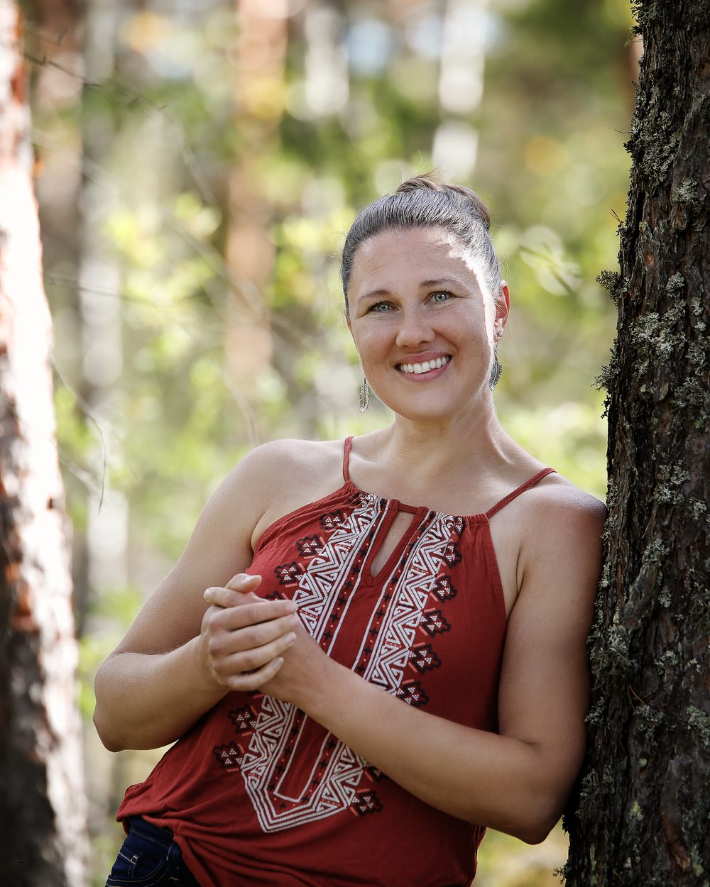

Över 20 års erfarenhet av geografisk information. Gedigen kännedom om kommunernas vardag.
Geografisk information och byggnadsuppgifter som kommunen har nytta av.
Jag hjälper kommuner att utreda brister i fastighetsbeskattningen, förbättra kvaliteten i byggnadsregistren samt producera och underhålla kart- och GIS-material.
Jag erbjuder också praktisk experthjälp med att utveckla geografiska informationssystem (GIS), register och informationshantering.

Fastighetsskatteutredningar
Finns alla byggnader i registren?
Bristfälliga byggnadsuppgifter kan innebära uteblivna fastighetsskatteintäkter för kommunen.
Jag hjälper till att identifiera byggnader som saknas i registren, jämföra byggnads- och skatteuppgifter samt utreda felaktiga eller bristfälliga uppgifter.
Utredningen kan genomföras stegvis enligt kommunens behov och resurser.
Vad har kommunen för nytta?
- Möjlighet att öka fastighetsskatteintäkterna.
- Mer tillförlitliga byggnadsregister.
- Mindre utredningsarbete för kommunens egen personal.
GIS-tjänster
Geografisk information i ordning och i bruk.
Jag producerar kart- och GIS-material från grunden samt uppdaterar, kompletterar och bearbetar befintligt material.
Jag gör GIS-analyser, registerjämförelser och sammanställer material för olika behov.
Jag hjälper också till att fundera på hur kommunens kart- och GIS-material, register och system lönar sig att organisera.
Nytt kart- och GIS-material samt uppdateringar.
GIS-analyser och sammanställning av register.
Experthjälp med system och informationshantering.
Beredskap
Kartan fungerar även när gränssnittet inte svarar.
När ett externt gränssnitt eller nätverket ligger nere behövs kommunens karta ändå – till exempel inom byggnadstillsynen, markanvändningen och vid störningar.
Ett lokalt reservsystem håller en lokal kopia av det material kommunen valt. Kopian kan användas i webbläsaren och i QGIS även under avbrottet.
Driftsättning i kommunens miljö.
Underhåll och övervakning.
Stöd för kontinuitetsplanering och beredskap.
Varför VLiNdATA?
Kommunernas vardag är bekant för mig.
Kommunerna har mycket värdefull information, men tiden eller personalen räcker inte alltid till för att underhålla och utveckla den.
Jag känner till kommunernas arbetssätt, system och praktiska utmaningar. Därför kan jag hjälpa till att hitta lösningar som inte bara fungerar tekniskt utan också går att genomföra i praktiken.
Jag erbjuder inte onödigt komplicerade lösningar. Mitt mål är att underlätta kommunens arbete och få saker att gå framåt.
- 20+års erfarenhet inom geografisk information.
- Kännedom om kommunernas praktiska arbete.
- Flexibelt samarbete och tjänster efter behov.
- Partner Oskari Summanen: över 20 år inom IT och över 10 år inom geografisk information.summanen.org (öppnas i en ny flik)
Referenser
Samarbete som fungerar i praktiken.
”Enligt min mening har samarbetet gått bra och i enlighet med det som avtalats, och det har framskridit flexibelt.”
VLiNdATA har samarbetat med Aura kommun för att utreda byggnadsregistrets uppgifter och förbättra deras kvalitet.
Samarbetet framskrider med hänsyn till kommunens resurser, och uppföljningen av utredningens resultat utvecklas också.
Referenskommuner


Företagare
Hej, jag är Virpi!
Jag heter Virpi Lindvall och är företagare och GIS-specialist i VLiNdATA Oy.
Jag har över 20 års erfarenhet av arbete med geografisk information och en stark bakgrund inom kommunal geografisk information, register och markanvändning.
Jag tycker om att lösa problem och att få något som känts komplicerat att fungera enklare.
Det är viktigt för mig att förstå kundens verkliga behov, hitta en praktisk lösning och se till att det som avtalats går framåt.
Det bästa med mitt arbete är när jag kan underlätta kundens vardag.
Kontakt
Kan jag hjälpa till?
Behöver er kommun en fastighetsskatteutredning, produktion eller uppdatering av kart- och GIS-material eller hjälp med register och system?
Tveka inte att ta kontakt, även om du ännu inte vet exakt vilken tjänst du behöver.
Vi funderar tillsammans på hur saken bäst kan lösas.
Virpi LindvallVLiNdATA Oy
- Telefon: +358 44 301 2471
- E-post: virpi@vlindata.fi
- Webbplats: vlindata.fi
- LinkedIn (öppnas i en ny flik)
- FO-nummer 3410053-6 (öppnas i en ny flik, på finska)